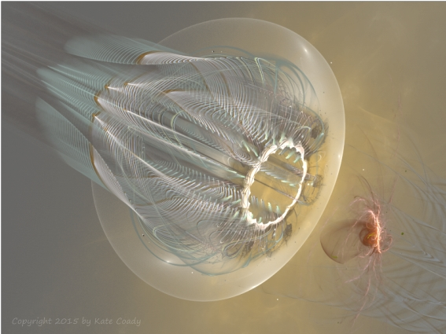

Eve of Evil (Part 3)
by
Gregg Marchese
Guiding her back toward her quarters from that horrid nursery, Endrin had explained the Program tactics: immediate separation from the birth mother, a series of intrusive tests and measurements and exposure to cold, then caged isolation except for precisely timed contact with impersonal Nurse-Handlers. Only the hardiest children survived. Such early imprinting taught them that the world was a cruel, lonely place, and that bonding with another person was intermittent and remote. Appeals and pleas through frantic crying were routinely ignored, and the infants quickly learned helplessness. Scheduled feeding of chemically engineered fluids containing highly-addictive carbohydrate complexes and other endocrine manipulators, administered by the Nurse-Handlers from hard tubules, deepened the lesson that only the most basic biological needs would be met, and no plea would help. The abandonment trauma was so profound that such children as survived were so desperate for approval and acceptance that they would grow to do anything, including risk death.
Among other useful attributes, they were thus trained to endure almost utter aloneness, as close as possible to conditions that existed in the Outward Realm.
All the later conditioning that Darlai remembered from her older childhood fell into place. She understood her own desperation to please, her unreasoning loyalty, her disregard for her own safety, so long as she was serving the City. It was all so carefully planned, but she was helpless to act against it now. A feral rage burned in her, but all she could do was channel it into a determination to succeed on her next journey, wondering if even that could redeem such a deeply flawed life. Still, it seemed her only hope.
That Nocturn Darlai slept fitfully, wandering through a dream darkness, compelled by a distant screaming she could not find and could not assuage.
At their fourth and final session, Endrin seemed resigned, voice too even, gaze too often averted. He took only a cursory assessment of her soul-state, not even approaching the hard shell, and ignoring the dispersed cloud her contact with the entity had set in her. He touched his slime pad and gave his official approval for another journey.
As she was leaving, his voice was a mutter in the silent chamber. "What horrors we endure for future’s sake. Will they even know?"
She had no answer. Her Handler and the Cynosures would know, and maybe this time it would be enough. She left without a word.
When the shutters of the City closed and the light pools dimmed to begin the next Nocturn, Darlai knew she would scarcely sleep. Her dream themes would only worsen. When the shutters opened and the lights glowed bright again, she would have to report to the pulse chamber, recovered or not. How could she sleep with the possibility awaiting there to redeem her life? This next journey might hold the only accomplishment for which the Handlers — and even the Cynosures — might accept her, though it could mangle her soul, morph her insane, or kill her.
Musing thus during that long fourth Nocturn, Darlai was startled to hear the soft chime of her door. A visitor? Who could be abroad in the corridors, when all the citizens should be peacefully dreaming? Darlai hid distress from her features and stood to open the door.
Out in the corridor, an oblong black slab hovered in the air at knee height, and upon it rested quiescent a frail form. Draped in a pale tunic that shone pink in the deep red light edging Darlai's doorway, the thin body lay on its back unmoving. The hands, shrunk to wisps of skin and bone, lay open and upturned, sickly pink against the black of the slab. Darlai scanned upward across the sunken chest, and started. The head looked overlarge, the lips thin and colorless, forehead bulging and gleaming with taut skin. Strands of translucent white hair fell limply back. But it was the eyes that struck Darlai. Clear as ice, yet warmed with a glow of love and peace, they reflected all that Darlai had never known. The soul shining out from those eyes had profound acceptance for pain and death, and no distress could trouble it. All was loved in their sight.
A squat, flabby man in a bodysuit of gray piped in black stood behind the slab. His head gleamed bald in the deep red light, the skin of his face flushed maroon. From small dark eyes hidden in bulges of skin he peered at Darlai. "The Cynosure wishes to share truth with you." Milden's voice sounded flat and toneless.
Darlai glanced at him, then back to the eyes of the stick figure on the slab. "The truth is — " Darlai could feel no awe nor fear looking into those eyes, only a calm joy that such peace could be. " — I could never serve the Cynosure well. I'm too selfish."
Milden glanced down at the slab. "She knows otherwise. She knows the impotence of peace, that such pure love as she has achieved can be unserving to life. And she knows that you have touched the Outward Power."
"Her spiritual opposite, she thinks?"
The Cynosure's bloated head nodded.
Darlai stood looking down, caught by those eyes, but not lost in them. She clung more firmly to her life of pain, the cramped angst of her existence. At least it gave her something to hold herself against. The Cynosure had drifted beyond all identity, to a formlessness untroubled by life or death.
Darlai shook her head. "No. The Level Two was something beyond opposites. It was — Hunger without need. Rage without cause. It had a motive to harm without the threat of being harmed. It was something outside our known dualities. You can't understand."
"She can." Milden stood unmoving. "The Cynosure knows the bliss of oblivion, and from there has seen the agony of the future. Compassion remains. It is not a false path she has chosen, but merely a response to our time. The future will not know such times. Determination must lead those future humans. A yearning to survive at any cost. No pain or hardship must deter them. They must be both ruthless and wise."
Darlai kept gazing into those placid eyes, and a sad compassion grew in her. So much had been renounced to achieve such peace. The mundane struggle that gave life meaning, the nuances of fear and hate, all had been left behind. The Cynosure was so benign that she was impotent. Darlai suddenly felt a fierce pride in her own tainted soul.
"And she wants me to bring back an Entity from the Outward Realm? She thinks that can be a balance to — " Darlai gestured at the frail figure. "You have no idea what a horror it is to touch such a thing."
"She knows. She must mate with it."
Darlai looked up into her Handler's eyes and blinked. To submit to Milden's grotesque embrace was horror enough, but the thought of intimate physical and emotional sharing with a Class Two entity — Daral looked back down. That light in the Cynosure's eyes could only come from truth. The Cynosure was in full acceptance of the soul-shrivelling horror such an experience would bring. Perhaps she no longer had a soul as Darlai thought of it. Looking into those clear eyes, Darlai knew that even a Cynosure could not be immune to the influence of an Ab-Norm. Still, she could see that it was something this wise being had evolved herself to do. Darlai knew she would strive beyond pain and horror to bring that entity to the Cynosure's presence, because it was what she herself was bred and trained to do.
The Cynosure must have seen the acceptance in Darlai's face, for her eyelids drifted down, hiding those clear depths. Milden reached out and tugged the slab backward, sliding soundlessly away. Before the door shut, Darlai saw her Handler staring back at her. In his eyes she saw a strange mix of eagerness and dread.
She did not sleep the rest of that Nocturn.
When the city opened its shutters to begin the new Diurn, Darlai was waiting on a balcony. A few others stood there as well, honoring the traditions of sun worship that had never entirely been forgotten. By their tan or black suits Darlai knew them to be Program support staff, janitors and cooks and laborers. They must have known she was a psychonaut in her light blue singlet, for they dared not look nor speak to her, but pressed to one side of the balcony.
Darlai stood apart, and allowed the shutter's shadow to slowly slide away from her face. She gazed out at the Blood Sun, a huge crimson sphere that loomed always just above the western horizon. Great dark ramparts rose to either side, the walls of the immense Valley, and far down its length she saw long shadows stretching out from the Sun like fingers caressing the red-tinted ground.
Some of those shadows were not cast by natural mounds or crags in the Valley floor, but by the upthrust of Cities spread along the Valley's length. Some of the smaller shadows would be thrown by immense mining equipment almost as tall as Cities themselves, or refineries on the shores of dark oil lakes. Even the huge harvesters sweeping over meadows of Gray Grasses stood high enough to cast slices of shadow across the crimson plain.
Through the crystal panes that encased the balcony, Darlai felt the faintest warmth on her face, and the distant glow in her eyes brought a surge of gratitude. The Cities had their histories, etched on crystal, of vastly ancient times when the Sun glowed a brighter orange and arched slowly through the sky, creating naturally the Diurns and Nocturns. Darlai was merely glad to see the Sun just as it was, and she basked in that inner and outer glow for a while, wondering if a sense of peace might finally come to her — the peace that came with acceptance of death. But a familiar tension remained in her chest and belly, and a constant angst in her mind.
Soon, she might never see light of any kind again. Suddenly the shadows looked like frightened fingers grasping to hold her back from doom.
She pulled herself away and marched through the halls of the Program complex to the pulse chamber. The door swung open, and Milden stood inside, face turned down and scowling at the neurassessor field, its nimbus already lit, poised for him to step into it and deploy the pulse helm. When Darlai entered, he looked up and stared at her, his expression tense beneath the slack flesh of his jowls.
Darlai started. Beyond her Handler the black slab hovered, and upon it the Cynosure sat upright. Her clear eyes pierced Darlai with their absence of need. Darlai glanced back at Milden, but he was gesturing toward the slime chair in the center of the spherical chamber. "Make yourself comfortable, Darlai 19. We have new mission protocols for you this time."
Darlai peered once more at the frail ancient face, that gazed placidly back. Trying to hide her excitement, knowing the Cynosure would know, Darlai strode to the chair and climbed on. At once the yielding warm tissue molded to her body, the mild anesthetic sweat of its skin numbing even that faint contact. Darlai felt the hum of its bio-electric charge.
From the edge of sight, she saw Milden's shadow step into the nimbus field. She leaned her head into the soft flesh of the chair and closed her eyes as the pulse-helm descended. She felt its tingling presence on her scalp, felt her hair stir in its energy field. Then the helm settled into her brain, and her angst drained from her, replaced with an eager focus.
Neural field contact established. Milden's thoughts in her mind, flat and detached as usual. I'll attend until you reach the Periblima.
Clear as ever, she replied, part of their ritual to test the connection. Sorry you can only come along so far. She turned her awareness outward. As usual, the Aether looks well traveled. Shall I take the usual route?
New mission objective, Darlai 19: engage, contain, and return with Class Two entity.
Her usual contempt for her Handler's obviousness was overrun by her excitement. Darlai knew Milden could sense her eagerness to please him and the Cynosure. Indeed, she thought it the main reason the elder had broken all norms and was here in the pulse chamber. But Darlai needed no added encouragement. This mission might be the only possible redemption of her tortured life.
I understand, she sent, and focused her attention on one particular route through the Aether.
None of her usual contempt arose when Milden sent, Then proceed along pre-established pathway to Periblima, and enter Outward Realm.
Just as she voltened into the familiar energy trail, a pulse of compassion and gratitude touched her mind. Could Milden...? Then Darlai knew the presence of the Cynosure also attended in her mind. Strangely, it gave her no greater comfort.
She traversed the pathway and soared through the Infinity Contortion without incident, barely noticing Milden's cautious commentary. She kept her speed moderate through the Stellar Linearity, where a few new voids had appeared. Unnecessarily, Milden warned her moments after she had sensed them herself, and without reply she carefully slipped around them and accelerated toward the Periblima. It's beauty touched her as always, but the dread and thrill at what awaited beyond dominated her being.
A quiet wave of appreciation swept like a soft breeze through her soul. That was the Cynosure, honoring the beauty of the Periblima. But without awe, without wonder. Darlai coursed up and stopped close to the swirling colors and patterns.
All we need is one. Milden, detached as always, yet Darlai sensed a tense import beneath his thoughts. Proceed when ready.
She'd been readied for this her entire life. It seemed easier than ever to renounce all will to live, and take that plunge into the Periblima. With a distant wail haunting her soul, she entered its chaotic field. This might be the last light she ever saw, as the colors whisked past, their strange psychic textures dragging at her soul. She felt the distant delight of the Cynosure at this experience, and then Darlai was Beyond, where no other human spirit could reach.
At once a dark tendril writhed toward her, and by reflex and habit Darlai dodged. Almost she plunged into a black pulsing mass that loomed into her escape path. She backed away and sought a relatively empty area in the grey fog-like realm, from which to survey her surroundings.
It was dense with dark presences. Level Three's, more minor Inimicae — though potent enough to freeze her spirit and slowly devour her. Relatively easy to avoid though, but now many more loomed on this side of the Periblima. Darlai was astonished that so many had gathered in the short time since her last journey. She imagined Milden blaming that on her brief contact with the Ab-Norm, but Darlai was alone, and felt familiar relief and sorrow.
Tendrils were wriggling toward her, and Darlai drifted forward again, weaving a path between them. A few times she had to veer dangerously close to the central bodies, and felt their sucking hunger. Almost she allowed a part of herself to be drawn in, to sample another touch, but these were not the entities she sought. Beyond them she sensed the Level Two's, and surged toward them with determination and dread.
Beyond even them, once more she sensed the aching presence of horror that could only be a Level One. It loomed closer, more defined in her awareness, like a dark god that had taken on obscure form, yet it was still only background to the seething presences of the Ab-norms coming into focus now.
Again Darlai paused. So many more Level Two's twisted and surged through the voids here. Now their wriggling tendrils intertwined in chaotic patterns, in countless nodes where too many strands tangled for her to be able to trace their sources. The black bodies swelled and shrank throughout the web, shifting restlessly, some brushing against others with what would sound to her ears like hisses.
Darlai almost panicked. How would she isolate one for contact? If she touched one, with so many interwoven like this, she would be alerting them all! She gathered her courage but tried to adjust her disdain for death — too many others were relying on her — and started forward through the tangles. Now she shrank, not from panic, but with a desperate discipline. She shaped her spirit into a column, then a spear, that slipped without touching through openings in the web. Even while she focused on this discipline, she cast her awareness wide, searching for isolated entities. The two opposite efforts were a psychic strain she had rarely endured, and she wondered if it might permanently damage her soul. She swept that concern aside. So long as she lasted through the mission...
Beyond endurance, beyond agony, she slipped through the dark web, seeking among the black spheres for one that hung apart. The writhing of the tendrils became more frantic. They sensed her of course. Some of the core spheres began to shift toward her. Darlai knew that if one touched her, it would alert all the others it was connected to and they would mob her, devour her in a frenzy. She shrank aside, but more tendrils wriggled into her path. Two spheres drifted in, one above and one to the side. Their strange shapes split and opened like hungry maws.
In a moment of surrender that she hoped would finally lead to relief, her way became clear. No longer to sneak, to hide, to cringe — She must embrace. With sudden confidence Darlai moved her soul toward the Ab-norm body beside her. She singled it out in her awareness as she did with her motion, offering her essence to it alone.
It responded. Drawing in its tendrils entangled with so many others, it twisted them loose and began to contract them toward its central body. That sphere absorbed its misty field into the dense core, even as the mass split and yawned open. Without pause Darlai surged toward that horrid hunger within.
The Ab-norm split wider. Now it almost folded back on itself to present its seething innards. Darlai saw tiny villi, the squirming strands waving frantic with eager hunger. She shaped her soul into a protective shell, and then extending a single thin strand, slowly reached out and with its tip touched one of the wriggling villi.
Almost her entire soul surged along that contact and into the virulent emptiness of the Ab-norm. A pulse of icy hate and hunger nearly engulfed her. Darlai had touched one before though, and with that knowledge held her soul apart. She welcomed the awful sense of wrongness, of aberration, for it told her that she had not yet given in to her longing for death. Her sacrifice must mean much more than her own soul. The Ab-norm was sucking at her though, drawing her life energy through that tiny contact her own tendril tip made with its single villus. Constricting her tendril now, allowing only a trickle through, Darlai swelled the rest of her form, spread it thin as a membrane and flung it around the dark sphere.
She strove to merely encompass it without contact, but the entity thrust out parts of its surface to clutch at her. She recoiled her thin skin without opening it, keeping the entity contained. Against all revulsion she kept her tendril in contact with the Ab-Norm's villus, which grew thicker and thrust deeper, seeking her soul. It probed further, until Darlai felt it slip into her mind, riffling frantically through her memories for base emotions to consume. Selectively she allowed it to feed on a few recent memories, minor fears, brief shame. She offered her latest harassment by Milden, but withheld the formative dramas of her life.
She began to tug away, back through the web toward the Periblima. The other Ab-norms were frenzied now, knowing that one of them had found prey. Their black strands waved frantically, their core bodies pulsing and splitting at random. They surged about in chaos, and at any moment one of them could touch against Darlai's expanded form. Now she could not shape herself into a sliver, else lose her captured entity. She would never be able to make it through the writhing tangle in this shape.
Her Ab-norm did not seem to care that it was enveloped. With malevolent glee it continued to suck at her soul, devouring the bits of memory and emotion she allowed it. Scenes from her youth in the Program classrooms, petty abuses from the other trainees, an adolescent's frustration at being unjustly blamed, slipped out of her into the Ab-norm. Darlai knew she'd never have those memories again, but her past was expendable. Her soul itself was expendable, so long as she kept it functioning long enough to return with the entity. She found that this shape suited her, a true reflection of the shape her soul took when in her body: thin and diffuse, with an empty core that could carry an alien evil.
It would never get her through the wildly waving net. She dodged and wove where she was, avoiding the tendrils that swept toward her, but made no progress toward the Periblima. At the same time, she focused on the shivering agony of her contact with her captive Ab-norm, sending ever-more-poignant memories into its hunger. Awkward sexual encounters, stinging betrayals and jealousy, insouciant responses from her Handlers, all went into its cold maw through their enmeshed tendrils.
Darlai found that she could also suck something of the Ab-norm's essence into herself. At first she sampled a small sip, and cringed at the jolt of wrongness. That very wrongness could be just the thing to help her. She sucked a bit more, taking the chill and manic hate of the Ab-norm into herself, watching in horror and hope as it spread through her soul. Such longing she had to merge with it, let its cold essence overwhelm her frail spark and make the agony end... She fixed upon that agony instead, knowing it as a sign that she was still separate. With fierce determination and endurance, she used it to move again through the web.
Soon a loop of black tendril touched her, but Darlai recoiled her own soul's essence to the inner surface of the membrane, pushing the essence of the Ab-norm she had allowed into herself to the outer surface. In confusion the tendril paused, thumped again on this strange bloated form, writhed back again in confusion. It had encountered what must feel like merely another Ab-norm, though strangely misshapen and tainted with odd energies. Through that touch, Darlai sensed the many other Ab-norms tangled through the nearby web. She strove not to cringe, but channelled her revulsion into a drive to push onward. Other tendrils and even the core bodies reached out to touch her bizarre hybrid form, gnaw on her surface with the edges of dark maws, but none could recognize her hidden within the outer shell of Ab-norm essence. She was able to surge through them, but the Ab-norm was demanding more of her memories, sucking harder at older and more formative parts of herself. Dramas from her girlhood, those wan longings of a latent child for joy, love, play, were devoured by the Ab-norm. A time when she was punished for spontaneously dancing slipped loose to feed the sucking hunger. Darlai strove to hold some memories back, allowing only small flashes to slip loose, but struggled against a mounting vacuum force. The parts of the Ab-norm she had allowed into herself became more active, striving to press inward from that outer surface, dissolving edges of her soul at the interface like hissing acid.
All she could do was hurry. If even a tiny rent was worn through, her own essence might be exposed, and a stray tendril might touch it, alerting all the Ab-norms to the presence of prey. Then she would be doomed. The mission would fail and all her pain would go unredeemed. She would have disappointed Milden, the Cynosure, all the people of Endjolos, even the vast populations of the Valley Cities and their countless unborn generations.
She hurried. Other tendrils and bodies struck her, and she no longer tried to avoid them. She surged straight back toward the Periblima, pushing through the Ab-norm mob, leaving a track of confusion and hesitation through their mass. The Ab-norm within her fed more deeply into her soul. She heard the wailing of that desperate infant within become louder. The Ab-norm heard it too, and tried to burrow faster. Darlai hardened parts of her soul in its path, striving to hold it away, even as she strove to push through the clinging, constraining web.
Finally she pushed through into a relatively open area. Some tendrils slipped off the Ab-norm shell around her, while others reached after her, then recoiled squirming. Even a few of the black spheres surged for a ways behind her, then stopped.
Darlai hurried on. She bumped into the Class Three hordes, pushing them aside, her contact sending them scattering. They could only sense the Ab-norm essence that comprised her outer shell, and would not obstruct a more powerful entity.
Why had the other Ab-norms stopped though? Surely they could forge through the Inimicae just as she was, and continue the chase right up to the surface of the Periblima. And why were these Class Three's so listless, barely moving until she touched them and sent them reeling away?
Her captive Ab-norm sucked harder, devouring memories of furtive games with dolls secretly fashioned from stuffed socks and string, boring deeper toward the infant buried in her core. Darlai shook off her questions and plunged through the Class Three's. Soon she saw the Periblima looming ahead, a blank dark gray like a gloomy fog bank. But the Periblima always looked lighter, more a ghostly white from this side. Why this darker tint?
Darlai felt the presence even through the gnawing demand of the Ab-norm within her. It was immense but diffuse, emanating an awesome power of evil that could know no opposite. Supreme in its hate and malice, the entity encompassed the entire plane of the Periblima surface, and reached on into vast distances of the Outward Realm. It seethed and yet loomed in quiescent power, like a static storm. Waves of doom rolled from it and shook Darlai and all the Inimicae around her.
The Class One had come. God of Evil.
© 2011 by Gregg Marchese.
Image © 2015 by Kate Coady.